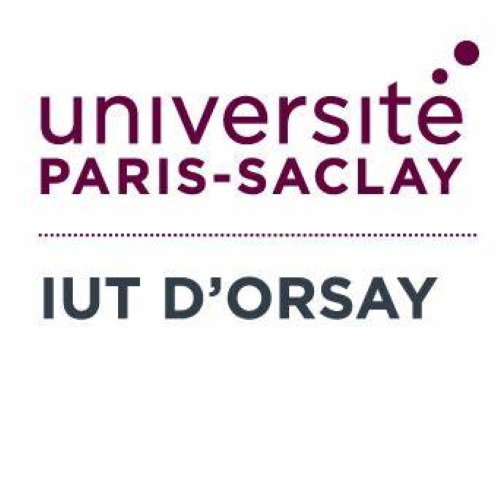

Étudiant en BUT2 Informatique à l'IUT d'Orsay, spécialisé en conception et développement d'applications.
Je m'appelle Thomas Grillot et je suis étudiant en 2ème année de BUT Informatique à l'IUT d'Orsay. J'ai choisi de me spécialiser dans la réalisation d'applications car ce qui me plaît, c'est de partir d'un besoin concret et de construire le logiciel de A à Z.
Techniquement, je code principalement en Java et en C++ , et je gère pas mal de bases de données SQL. J'aime quand le côté technique fonctionne bien, mais j'ai aussi appris que l'organisation fait la différence : savoir utiliser Git proprement , documenter son travail et avancer en équipe.
Que ce soit lors de hackathons comme la Nuit du Code, en développant un jeu vidéo 2D , ou en créant une appli de gestion de groupes pour l'IUT, j'adore me lancer dans de nouveaux projets. C'est en pratiquant et en respectant de vraies deadlines que j'apprends le mieux.
Lycée Louis Bascan | 2024
Spécialités Mathématiques et NSI (Numérique et Sciences Informatiques). Obtenu avec Mention Bien.
IUT d'Orsay | 2024 - Aujourd'hui
Actuellement en 2ème année, Parcours A : Réalisation d'applications. Approfondissement en conception, développement logiciel, et validation technique.
G2S (Groupe Systèmes)
Immersion dans le monde professionnel en tant que développeur. Mise en pratique de mes compétences techniques sur des cas concrets, découverte des processus de l'entreprise et travail collaboratif au sein d'une équipe informatique.
Méthodique dans mon travail, je sais structurer mon code et mes tâches pour mener à bien mes projets.
J'apprécie la collaboration, l'entraide et le partage de connaissances pour atteindre un but commun.
Flexible et consciencieux, je m'adapte rapidement aux nouveaux environnements et technologies.
Très engagé, je mets un point d'honneur à respecter mes engagements ainsi que les délais fixés.
Pratiquant passionné. Ce sport a forgé mon sens du collectif, mon esprit d'équipe et ma persévérance.
Découvrir de nouvelles cultures nourrit ma curiosité au quotidien et développe ma capacité d'adaptation.
Amateur du 7ème art, j'apprécie l'évasion, la narration complexe et la créativité visuelle.
Toujours en fond sonore lors de mes sessions de code, elle est ma source de concentration.